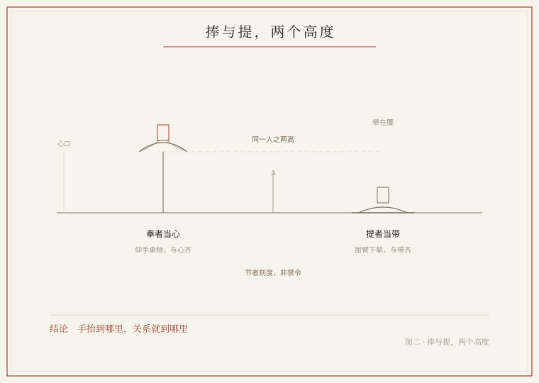

曲礼下 · 二·一 · 第 124 课
曲礼下开篇第一句。捧物的人，手与心齐；提物的人，手与带齐。郑注只四个字：「高下之节。」
说什么事：凡奉者当心，提者当带。
落在哪一层：仪。纯粹的身体尺度，且是可换算的尺度。
为何编在此位：曲礼上以「齿路马，有诛」收在用物之极细处；曲礼下另起一简，仍从手说起，但先说高度。上下两篇之间，接的是一双手。
【经】凡奉者當心，提者當帶。
【注】高下之節。
【疏】「凡奉者当心，提者当带」，物有宜奉持之者，有宜提挈之者，各因其宜。奉之者，谓仰手当心，奉持其物。提之者，谓屈臂当带，而提挈其物。带有二处，朝服之属，其带则高於心，深衣之类，其带则下於胁。……今云「提者当带」，谓深衣之带。且古人恒著深衣，此明平常提奉，故益可知也。
奉 《释文》「本亦作捧，同，芳勇反」。仰手承物，非握非持。
当心 疏「仰手当心」。当者，齐也，与心相平。
提 《释文》「徒兮反」。屈臂而下挈，与「奉」正相反：一仰一屈。
当带 疏「屈臂当带」。带在腰间，故提物之手低于奉物之手。
带有二处 疏谓朝服之带高於心，深衣之带下於胁。故「当带」不是一个固定高度，随所著之服而变。
高下之节 注四字。节者，刻度，非禁令。
凡捧物的人，双手与心口齐平；凡提物的人，手与腰带齐平。
一件东西该捧还是该提，不取决于它多重，取决于它是什么、递给谁。捧则仰手当心，提则屈臂当带。这一句话把「持物」拆成两个标准姿态，全书后面所有「执器」「执玉」「授绥」的高下，都是在这条基线上加减。
第一层 手的高度是敬的刻度 敬不可见，所以寄在手上。手抬到心口，是承；手垂到腰间，是挈。同一颗心，两个高度，两种关系。
第二层 带非一高 朝服之带高於心，深衣之带下於胁。故「当带」并非一个绝对数，而是「随服而定」。礼给的是关系，不是尺寸——这一点最容易被后世读死。
第三层 常法先立，降杀随后 此句是常法，下一节「执天子之器则上衡」是加减。先有基准，才谈得上加减；没有基准的加减只是随意。
第四层 平常之事 疏特意点出「古人恒著深衣，此明平常提奉」。礼不是只在朝聘大典上用的，是天天提东西时用的。
与今日何干 递名片、递剪刀、递杯子，手的高度和正反都还在说话。今天没人教你「当心」，但接到一份双手平举到胸口的文件，你会立刻知道对方的分寸。
| 左 | 右 |
|---|---|
| 凡奉者当心 | 仰手承物，与心相平 |
| 提者当带 | 屈臂下挈，与带相平 |
| 物有宜奉持者 | 有宜提挈者，各因其宜 |
| 朝服之带高於心 | 深衣之带下於胁 |
| 古人恒著深衣 | 故此句明平常提奉 |
| 高下之节 | 节是刻度，非禁令 |
画两个并列的人形侧影，皆无面容：左一人双臂上举、两掌仰承，掌心正好齐于心口的高度；右一人双臂下屈、两手在腰带的高度合拢提挈。两人之间画一条极细的水平虚线，贯穿左人心口与右人腰带，示意两个高度并不相同。人物脚下各一条短横线为地。不写文字。赭色只用在中间那条虚线的两端。
